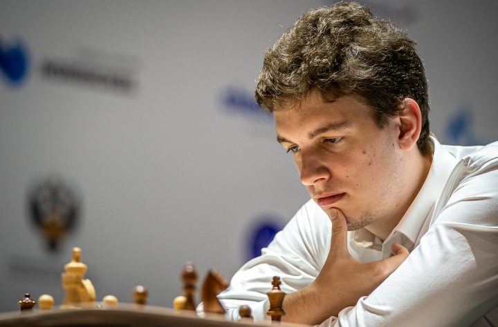
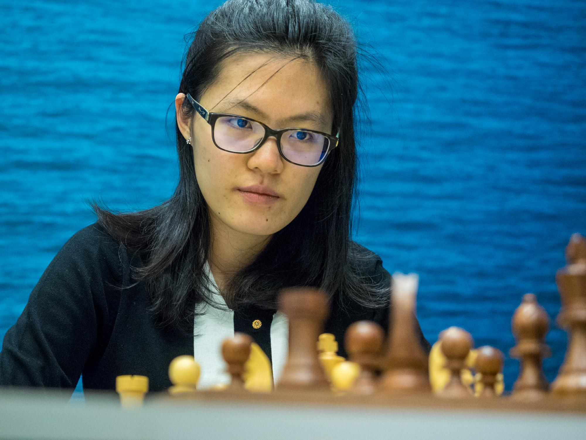
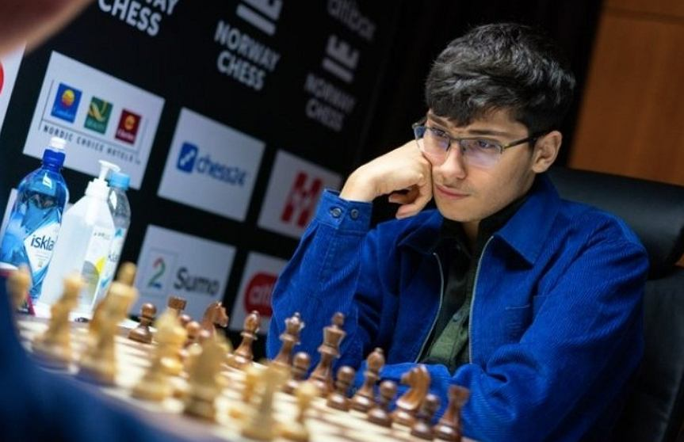

Najlepsi szachiści
Na Świecie jest wielu świetnych szachistów, którzy są arcymistrzami. Jednak o najlepszych 10 zawodnikach słyszał prawie każdy szachista.
Aktualna najlepsza dziesiątka:
Magnus Carlsen
Ian Nepomniachtchi
Ding Liren
Alireza Firouzja
Giri Anish
Wesley So

Hikaru Nakamura
Fabiano Caruana

Viswanathan Anand
Levon Aronian
Każdy z nich miał już wiele osiągnięć, jednak najwyższy tytuł ma Magnus Carlsen, który odebrał mistrzostwo świata Viswanathanowi Anandowi, który wygrał kilkukrotnie w swojej karierze mecz o ten tytuł.
Magnus Carlsen
Aktualny mistrz świata, który trzykrotnie zdobył potrójną koronę, czyli zwycięstwo w meczu o mistrzostwo świata oraz wygranie mistrzostw świata w szachach szybkich i błyskawicznych, które są grane systemem szwajcarskim.
Jest niekwestionowanie najlepszym zawodnikiem na świecie i pokazuje to w turniejach na żywo jak i tych online, gdzie wielokrotnie wygrywa albo jest w czołowej trójce.


Hikaru Nakamura
Jeden z najlepszych szachistów, który wyróżnia się niesamowitym zmysłem taktycznym. Im mniej czasu na partie tym silniejszy się staje. Od wielu lat rywalizuje z Magnusem o tytuły w szachach błyskawicznych ale również szybkich.
Jest jednym z najbardziej znanych szachistów, wynika to z tego, że jest streamerem i nagrywa filmy na You Tube, gdzie ma ponad 1,7 mln subskrybentów.
Jan-Krzysztof Duda
Janek jest najlepszym polskim szachistą w historii. Wygrał Puchar Świata (po tym osiągnięciu wiele osób dowiedziało się, że w Polsce jest tak znakomity szachista) i walczył w Turnieju Kandydatów. Wygrywał wiele ważnych turniji online. Regularnie walczy z najlepszymi zawodnikami świata i uzyskuje świetne wyniki. Szachista z Wieliczki podobnie jak Nakamura lepiej sobie radzi na skróconych tempach, gdzie jest w samej czołówce światowej.

Yifan Hou
Hou jest aktualnie najlepszą kobietą, jednak zawodową karierę zakończyła kilka lat temu, skupiła się na studiach. Kilkukrotna mistrzyni świata okazjonalnie grywa w turniejach internetowych takich jak Speed Chess Championship w kategorii open, gdzie nie dała rady zajść do finału, jednak w kategorię kobiecą wygrywała i stawała na podium.

Alireza Firouzja
Alireza jest najlepszym juniorem od kilku lat. Na koniec 2021 r. osiągnął ranking ponad 2800, a w ostatnich miesiącach 2022 r. doszedł do 2900 rankingu w szachach błyskawicznych. Aktualnie 4 zawodnik na świecie wygrywał już wiele dużych turnieji. Grał również w ostatnim Turnieju Kandydatów, jednak zawody poszły mu słabo i od tego czasu, młody zawodnik nie ma tak dobrej formy, jednak cały czas utrzymuje się w czołówce światowej i w przyszłości może będzie walczył o tytuł mistrza.
